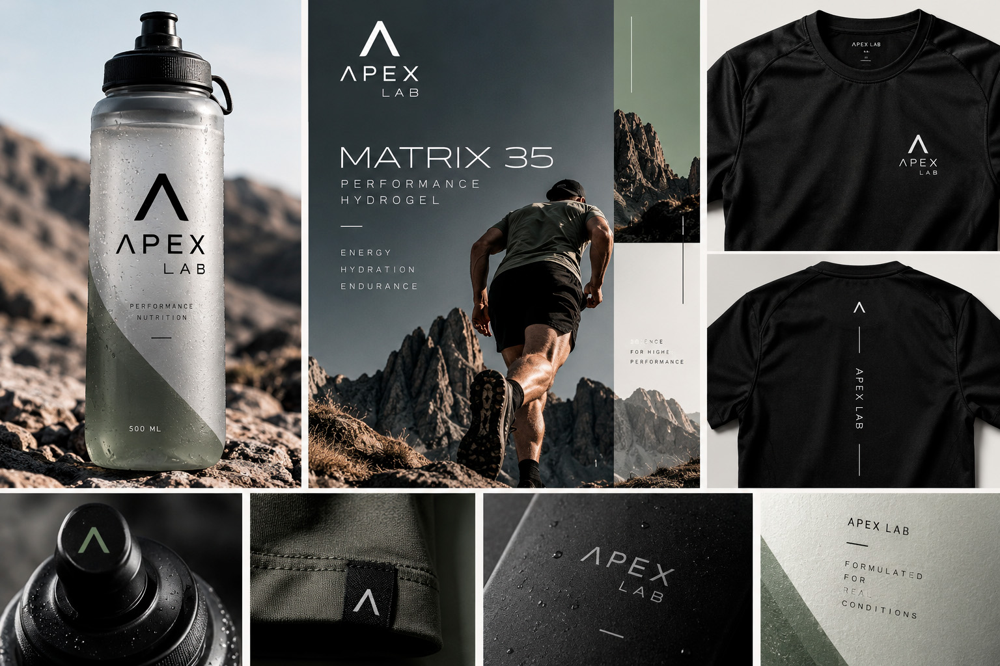
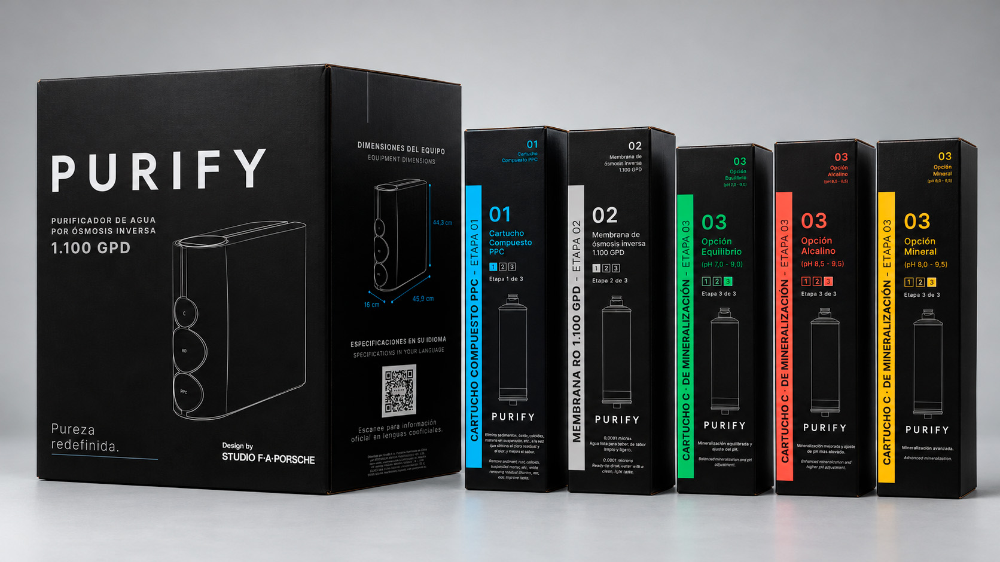
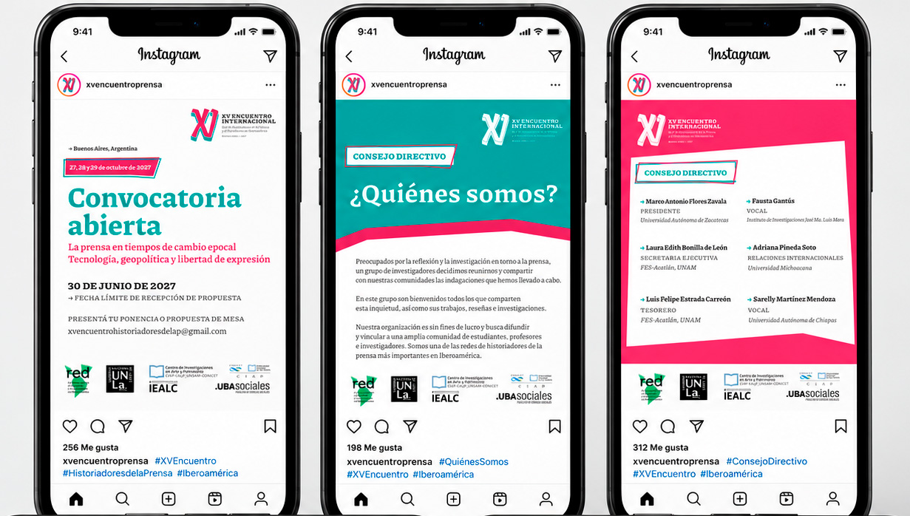
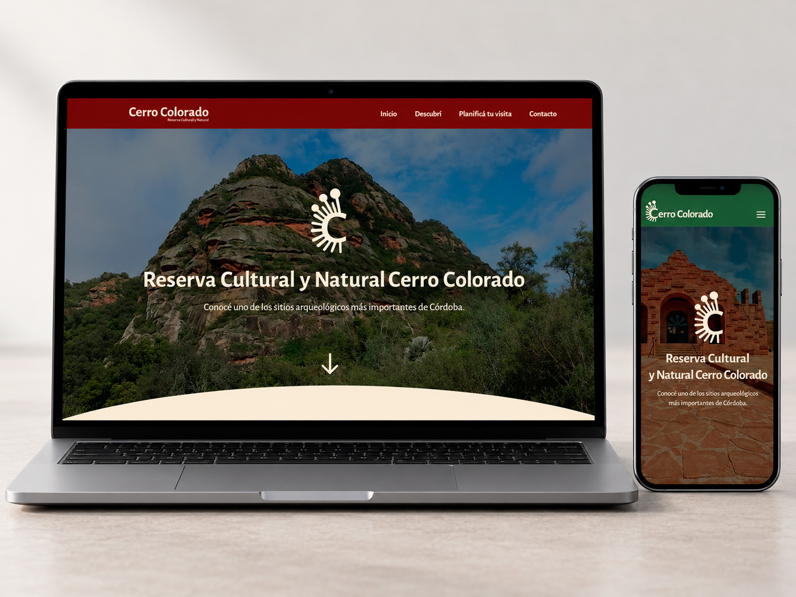

Diseño de identidad visual y packaging para una marca de suplementación deportiva. Una propuesta que combina rendimiento, tecnología y claridad gráfica.
01 / PORTFOLIO
Una selección de proyectos de identidad visual, packaging y diseño digital.

Diseño de identidad visual y packaging para una marca de suplementación deportiva. Una propuesta que combina rendimiento, tecnología y claridad gráfica.

Diseño de sistemas de packaging para purificadores de agua y cartuchos de recambio, con una estética técnica y minimalista.

Identidad y piezas de comunicación para el XV Encuentro Iberoamericano de Historiadores de la Prensa, Buenos Aires 2027.

Rediseño de la experiencia digital de la Reserva Cultural y Natural Cerro Colorado: arquitectura de información, interfaz y prototipado.
PROYECTO DESTACADO / 04
Rediseño de la experiencia digital de la Reserva Cultural y Natural Cerro Colorado. El proyecto abordó la reorganización de contenidos, la navegación y el desarrollo de una interfaz visual coherente, adaptable a diferentes dispositivos.
Recorrido de las pantallas Inicio, Descubrí y Planificá tu visita.